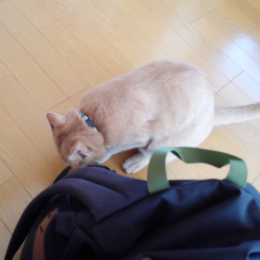
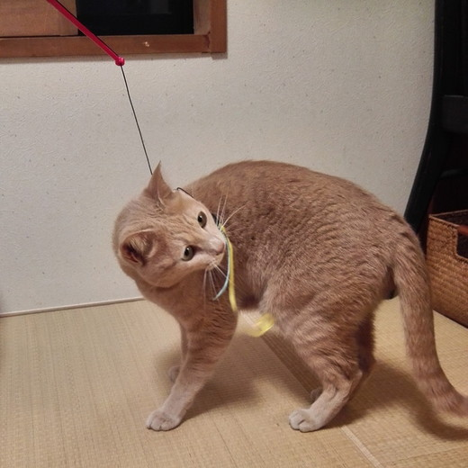
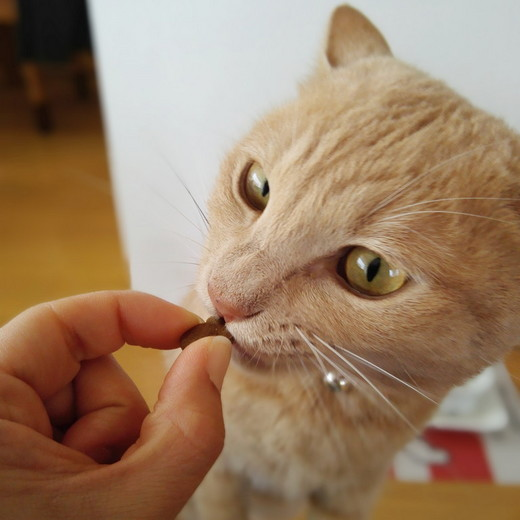
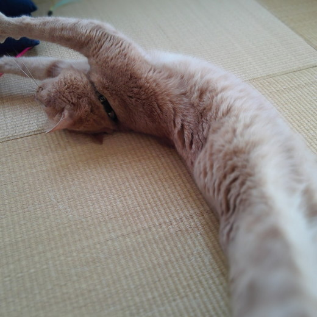
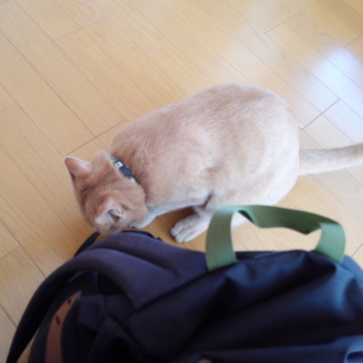
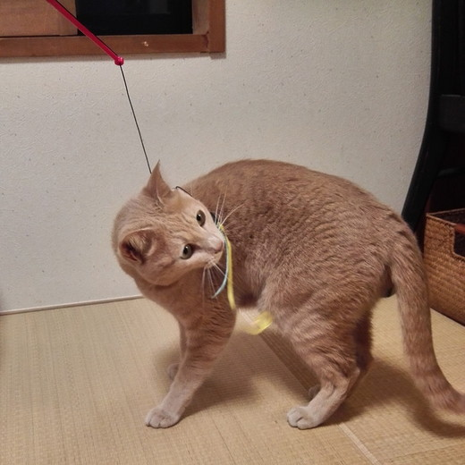
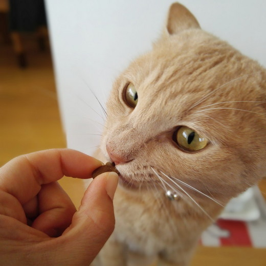
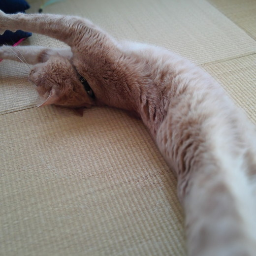

梅吉お留守番事情 [梅吉]
〜〜〜今日は文字が多いのです〜〜〜〜
我が家ではおっとと二人揃って外泊する時、梅吉の世話はシッターさんにお願いしています。
活発すぎる梅吉はペットホテルを含めよそ様に預ける事は考えられない。
自動給餌器は破壊するだろうし、フードを留守中分置いておけば 間違いなく一気食い。
シッターさんしか選択肢がなかったとも言えます^^;
お楽しみの旅行は諦めたとしても夫婦揃って実家は札幌。
実家で何かあれば絶対に泊まりで家を空けなければなりません。
何か起きてから梅吉の世話はシッターさんで大丈夫なのか？と心配するのが嫌だったので
梅吉を我が家に迎え入れて早々にお試し的にお世話をお願いしました。
シッターさんはネットで探しました。
実は梅吉を迎え入れるず〜っと前、５年くらい前から目星をつけていた方。
また動物を飼うこともあるかもね・・・と密かにチェックしていたのです(^▽^;)
シッターさんのインスタにアップされているわんこやにゃんこ、定期的に同じ子が登場します。
固定客がついている方なら間違い無いかな・・・というのも決め手になりました。
最初にお願いしたのは一泊二日の帰省の時。
出かけた日の夜と翌日の朝のお世話をお願いしました。
初めはまず我が家に来てもらって打ち合わせ。
お世話の内容の確認、私からの注意事項、シッターさんからの質問
トイレのある場所などの説明＆梅吉との面談。
（ワクチンの接種証明書、かかりつけの動物病院の情報も伝えました。
災害時の避難場所も聞かれましたよー。）
この時、交通費500円が発生しました。
我が家でお願いしているのは猫・小動物のシッティング1回30分1900円のコースです。
ベランダの花鉢の水やりなどもお願いできます。夏場などこれが実にありがたい！
お世話後は訪問時の梅吉の様子をメールで報告してくれます。
この内容に1回の交通費500円がプラスされます。
私と一緒にシッターさんと会ったときは荷物やシッターさんを嗅ぎ回って
足にガブガブしようとしていましたが
家族がいない時にシッターさんが家に入って来たら梅吉はどんな反応をするのか！？
と期待半分、心配半分でシッターさんからのメールを待っていると・・・
以下、初めて送られて来た写真です。

シッターさんの荷物を嗅ぎ回っているらしい・・・

ちょっとーなに普通に遊んでるのよー！

なに手からカリカリ食べてんのよー！！

なにお腹見せてんのよー！！！
と衝撃の写真が！
人を怖がらない子でよかったよ・・・・でもちょっとショックー![[もうやだ～（悲しい顔）]](https://blog.ss-blog.jp/_images_e/143.gif)
ご飯をもらえればおかーさんじゃなくてもいいの・・・・？
以下シッターさんからのメールの抜粋です。
「ごはんを準備しようとキッチンのところへ行くとき、いきなり足をガブー！と噛んでくる梅くん。
（中略）
じっとしているとスリスリしてくるのですが、歩き出すと飛びかかりガブガブしてきたので、
梅くんなりのあまがみ？それともプロレス？と思いながらも結構痛めなので、
なかなかお世話が進まず…
（中略）
頭をなでなでは気持ち良さそうにしてくれるのに、歩くとすぐ足を狙ってくる梅吉くん。
お伺いしてオレンジのスリッパをお借りしたのですが、
これがなかったら結構やられていたかもです^^;」
と爆笑（飼い主限定）の内容でした。
その後もお世話をお願いするたび同じような文面のメールが送られてくるので
シッターさんにとっては手強い顧客かもしれませんw
が、住み慣れた自分のお家でご飯とトレイのお世話をしてもらってシッターさんの足にがぶがぶ・・・
梅吉にはこのお留守番方法が合っているかなと思っています。
以上ご参考までにと記事にしてみました。
梅吉のシッターさんのHPのアドレスも載せておきますね。
COCOWALK
 ↑ガブッと一押し↑
↑ガブッと一押し↑
次回の更新は丹後半島旅行記とお留守番梅吉の様子の予定でーす。
我が家ではおっとと二人揃って外泊する時、梅吉の世話はシッターさんにお願いしています。
活発すぎる梅吉はペットホテルを含めよそ様に預ける事は考えられない。
自動給餌器は破壊するだろうし、フードを留守中分置いておけば 間違いなく一気食い。
シッターさんしか選択肢がなかったとも言えます^^;
お楽しみの旅行は諦めたとしても夫婦揃って実家は札幌。
実家で何かあれば絶対に泊まりで家を空けなければなりません。
何か起きてから梅吉の世話はシッターさんで大丈夫なのか？と心配するのが嫌だったので
梅吉を我が家に迎え入れて早々にお試し的にお世話をお願いしました。
シッターさんはネットで探しました。
実は梅吉を迎え入れるず〜っと前、５年くらい前から目星をつけていた方。
また動物を飼うこともあるかもね・・・と密かにチェックしていたのです(^▽^;)
シッターさんのインスタにアップされているわんこやにゃんこ、定期的に同じ子が登場します。
固定客がついている方なら間違い無いかな・・・というのも決め手になりました。
最初にお願いしたのは一泊二日の帰省の時。
出かけた日の夜と翌日の朝のお世話をお願いしました。
初めはまず我が家に来てもらって打ち合わせ。
お世話の内容の確認、私からの注意事項、シッターさんからの質問
トイレのある場所などの説明＆梅吉との面談。
（ワクチンの接種証明書、かかりつけの動物病院の情報も伝えました。
災害時の避難場所も聞かれましたよー。）
この時、交通費500円が発生しました。
我が家でお願いしているのは猫・小動物のシッティング1回30分1900円のコースです。
ベランダの花鉢の水やりなどもお願いできます。夏場などこれが実にありがたい！
お世話後は訪問時の梅吉の様子をメールで報告してくれます。
この内容に1回の交通費500円がプラスされます。
私と一緒にシッターさんと会ったときは荷物やシッターさんを嗅ぎ回って
足にガブガブしようとしていましたが
家族がいない時にシッターさんが家に入って来たら梅吉はどんな反応をするのか！？
と期待半分、心配半分でシッターさんからのメールを待っていると・・・
以下、初めて送られて来た写真です。

シッターさんの荷物を嗅ぎ回っているらしい・・・

ちょっとーなに普通に遊んでるのよー！

なに手からカリカリ食べてんのよー！！

なにお腹見せてんのよー！！！
と衝撃の写真が！
人を怖がらない子でよかったよ・・・・でもちょっとショックー
ご飯をもらえればおかーさんじゃなくてもいいの・・・・？
以下シッターさんからのメールの抜粋です。
「ごはんを準備しようとキッチンのところへ行くとき、いきなり足をガブー！と噛んでくる梅くん。
（中略）
じっとしているとスリスリしてくるのですが、歩き出すと飛びかかりガブガブしてきたので、
梅くんなりのあまがみ？それともプロレス？と思いながらも結構痛めなので、
なかなかお世話が進まず…
（中略）
頭をなでなでは気持ち良さそうにしてくれるのに、歩くとすぐ足を狙ってくる梅吉くん。
お伺いしてオレンジのスリッパをお借りしたのですが、
これがなかったら結構やられていたかもです^^;」
と爆笑（飼い主限定）の内容でした。
その後もお世話をお願いするたび同じような文面のメールが送られてくるので
シッターさんにとっては手強い顧客かもしれませんw
が、住み慣れた自分のお家でご飯とトレイのお世話をしてもらってシッターさんの足にがぶがぶ・・・
梅吉にはこのお留守番方法が合っているかなと思っています。
以上ご参考までにと記事にしてみました。
梅吉のシッターさんのHPのアドレスも載せておきますね。
COCOWALK
次回の更新は丹後半島旅行記とお留守番梅吉の様子の予定でーす。

カフェオレ色の梅吉

梅吉 2023年8月10日 永眠


梅吉と出会った譲渡会

犬猫の理由なき殺処分ゼロ
妄想広告
UMEKICHI 光

爆発的に早い！
時々攻撃的！
Thanks to Mr.Boss365
爆発的に早い！
時々攻撃的！
Thanks to Mr.Boss365

シッターさんが合っているのですね。よかった。でもこの写真は衝撃ですよね。飼い主としてはちょっと複雑"(-""-)" 理想の流れは初め警戒して怖がったけれど、だんだん慣れて大丈夫になりました。みたいな感じ(笑)
by palpal (2017-11-22 16:15)
家はシッターさんを頼んだことがなくて
いつもペットホテルか病院のお預かりを利用しています。
タンゴだけは、ホテルや病院では問題を起こしそうなので
実家に預けたり母に家まで見に来てもらったりしていました。
安心して預けられるシッターさんと巡り合えてよかったですね。
家の母より安心ｗ
写真を見ると、普段と変わらない様子に見えてちょっとショックだけど
昨日のちょっと不安そうなお出迎えの動画を見ているから。
梅吉くん頑張ったんだよね。
by emi (2017-11-22 16:41)
梅吉さん！安心出来るお家でお留守番のがいいですよね♪
任せられるシッターさんがいると助かりますね！
梅吉さんがノビノビと過ごしてくれると
嬉しいような複雑な気持ち(;^_^A
by きぃ (2017-11-22 16:48)
一人でお留守番なので退屈してて誰か来て嬉しかったのでしょうか。フレンドリーな梅吉さんにはぴったりの方法ですね。
by zombiekong (2017-11-22 17:08)
ちょっちょっと！梅吉君！！
お腹見せてノビーーーなんてしたら
ちぃさんがやきもち妬いちゃうよ〜〜〜(笑)
でもね、うちの子たちもシッターさんとのほうが楽しく遊ぶの。
ひどいよね！(笑)
まあ・・・シッターさん、さすがプロって感じなんですけどｗ
怖くて隠れちゃうよりも、こんなふうにのびのびしてるほうが、出かけてる方も嬉しいよね^^
by リュカ (2017-11-22 18:26)
それは良い方に巡り会えましたね☆凄腕のシッターさんなのでしょうね＾m＾
梅吉さん、のびのびしすぎだよーっ＾o＾
がぶがぶって、ある意味親しみを感じてないとやらないですよね？
怖がって出てこないよりは、楽な気分でお留守番できていて、ずっといいんでしょうけどね。
５年も前から目星をつけていたとは、すごいですね～＾＾
by sana (2017-11-22 19:57)
シッターさん、プロですね。
梅吉さんのガブガブは愛情の印？
やっぱり、遊んで欲しいのでしょうね。
でも、1回で懐かれると相手がプロとはいえ、焼き餅が焦げちゃいそうですね（笑）
by kiki (2017-11-22 20:35)
梅吉さん、お留守でシッターさんに代わっても
ぶれない充実ライフを送っていたのですねー。^^;
もしウチの猫だったら、隅っこに隠れてしまうと思うので
羨ましいです。^^)
by yes_hama (2017-11-22 21:03)
梅吉さん、さすがだな～(*^▽^*)
シッターさんも凄腕だな～(*^▽^*)
5年も前から探していたちぃさんもすごいな～(*^▽^*)
ウチもいざというとき函館なので、お試しやっておいた方がいいなと、改めて思いました。
ウチのはコタツの隅に隠れて出てこないだろうと思うけど、猫のお世話をしたことがない友人よりは、プロのシッターさんの方が安心ですね。
カギを預けてしまうことが不安だったんですが、会員制を取られているようで逆に安心かもしれまんね。
情報ものすご～く参考になりました！ありがとうございます。
それにしても、初対面でお腹まで出しちゃいますか・・・(^▽^;)
by ゆきち (2017-11-22 22:26)
お腹を見せた写真にショックな気持ち、わかる様な気がします(^^;
でも、梅吉さんが人懐っこい証拠ではないんでしょうか。
そう思いました(^^)
by riverwalk (2017-11-22 23:09)
すごーく参考になりました( ´∀｀ )
私の実家も九州で、日帰りは出来ないので
シッターさんってどうなのかな？って思っていました。
ベランダの水やり等もお願い出来るなんて有難いですね。
自分のコが人見知りせずに、可愛がってもらえたら
嬉しいんだけど、甘えてる姿を見たらちょっとジェラシーかも( ´艸｀)
ここは地方なので大阪みたいに充実してないかもしれないけど、
この機会に、ちょっと調べておこうと思います。
少々の出費は仕方ないとして、
信頼できるシッターさんを探せたらいいな～(*^^*)
ちぃさんご夫婦で、楽しい旅行ができて良かったです＾＾
by マーヤ (2017-11-23 01:23)
うちはほぼ全員が人見知りするので
私が家を空ける事は考えないようにしてます（爆）
by ぽちの輔 (2017-11-23 07:20)
わー。リラックスしまくってるやん(≧∀≦)
それだけプロのシッターさんなんでしょうね。
定期顧客が付いてるかどうかのチェック、
確かに理にかなってると思います。
さすがの目の付けどころ！！
by よーちゃん (2017-11-23 07:55)
猫シッターさんの存在は初めて知りました。
以前はペットショップへ預けていた時期もありましたが、以降はカリカリを置いて数日留守にしていた、いけない飼い主でした(^_^;)
でも、梅吉さんは立派ですね。家で飼っていた猫だったら逃げ回っていたと思います。
by kou (2017-11-23 08:58)
うちも探しておこう！と強く思いました！！
ゆづもシッターさんと仲良く遊べるタイプだと思います(^^;
添い寝サービスも良いかなぁとじっくりHP読みました〜。
料金も、漠然ともっと高い物だと思っていたので、
へぇ〜(古い(^^;)の連続！
by も〜 (2017-11-23 10:26)
シッターさんに懐いてくれるのは嬉しいけど、少しは警戒してくれたりすると
下僕としてはまた嬉しくて・・・複雑ですよねぇ(⌒-⌒; )
うちはかみさん妹に泊りがけでシッターをお願いしてるので、気分的に楽です♪( ´▽｀)
が、私とは一緒に寝ないニケが足元で一緒に寝てる写真を送信されると
「マジか(￣Д￣)ﾉ」って落ち込みます´д` ;
by ニッキー (2017-11-23 11:11)
おもてなしガブガブ・・・爆笑！
でもでも、こんな可愛らしい表情をする梅しゃんにジェラスを感じてしまう、お気持ち・・・わかりますにゃ。成長って、ある意味せつない・・・。
by Ginger (2017-11-23 17:26)
梅吉さん、シッターさんに心許しちゃっているのですね！
お出かけの時にペットホテルじゃ落ち着かないのですね(^^)
by ma2ma2 (2017-11-23 19:09)
うちは人数の多さでシッターさんしか選択肢がなく、
お家を新築する折には玄関入ってすぐ左にねこの部屋、
右には洗面台（ねこのための給水や食器洗浄用）を配して、
その先の階段ホール手前にもう１枚、玄関ドアと同じドアを設置。
もちろん鍵付きで、お願いしたシッターさんがその先へ侵入できないよう、
シッターさん対策（？）万全の間取りを考案しましたのに、
５年前、３泊４日の旅行をしたのが最初で最後。残念なことになってます。
お世話や料金のシステムなど同じでしたけど、
３匹めからは追加料金が１匹に付き５００円だったかな、発生しました。
いま心配なのは、不幸があったときのこと。
さすがに実母や義父母の場合、日帰りで葬式だけっていうわけにはいかないから、
１泊、場合によっては２泊、家を空けなくちゃならないだろうって思うと
どうしたものかって思案中です。
いちおういまのところ「その気配」はありませんが。
by ハリネズミ (2017-11-24 09:01)
その威風堂々っぷり！（ ゜o ゜）
ヤキモチ焼いちゃいますね^^;
梅吉くんにはシッターさんが大正解のようですね〜
相性も良かったのでしょうね。
我が家は家族で旅行さえしなければ、長時間留守にすることもありません^^;
兄家のにゃんシッターはときどき、やります。ウハウハです。（←浮気）
by Ja-Kou66 (2017-11-24 23:50)
さすが、梅吉さん！ お留守番も、堂に入ってるわ〜(^.^)
よさそうなシッターさん、30分・1900円はお安い♡
by のらん (2017-11-25 11:16)
これだけ梅吉さんが歓迎してくれると、ペットシッター冥利につきますなぁ〜（≧∇≦）
先日伺った時も全く動じない梅吉さんの堂々たるお姿に、私本当にウハウハでした！！マニアにはたまらん対応ですわ♪
人間の使い方を知ってらっしゃる、喜ぶツボを心得てらっしゃる梅吉さん(=^x^=)
喜んでお仕えする者がここにおります事をお忘れなく、梅吉さま(^-^)v
by くつしたにゃん (2017-11-25 12:58)
palpalさん＞
そうなの〜。超複雑w
梅吉、最初からこんなに積極的でいいの？って思いましたよー( ；∀；)
お世話を任せられる方がいて安心、って納得することにしました。。。
emiさん＞
梅吉の動物病院、お預かりはしていなくて・・・
お薬が必要な子は病院が安心なんですけどね。
幸いなことにシッターさんは薬対応もしてくれます。プロでしょー。
でも「梅吉くんの口に放り込むのは無理だと思います・・・」って^^;
ご飯と一緒に薬を食べますって報告したら安心してたwww
梅吉、お留守番頑張りましたよ＾＾
留守番中、実はあまり眠れていないんだと思うの・・・
人の物音している方が安心して眠れるのかな。赤ちゃんみたい。
私たちが帰って来た翌日は爆睡してます=´ᆺ`=
きぃさん＞
本当はきぃさんのお家みたいに安心してお任せできるご家族がいてくれるのが
理想的なんですけどね〜。
そうとも言っていられず・・・^^;
梅吉がお家でのびのびを目指したお留守番でしたがのびのびしすぎ〜！
zombiekongさん＞
退屈で寂しかったところにシッターさんが来て食いついた！と言う感じでしょうか^^;
家を空ける方としてはコチコチに固まって1日を過ごされているよりも
気が楽ではあるんですけど・・・
かなり複雑ですwww
リュカさん＞
普通に遊んで手からカリカリを食べる・・・まではまだしも
お腹見ることないじゃない？ですよねー。やっぱりプロの技？？
シッターさんと初めて会った時に「シッター認定証」みたいなのを見せられて
それは意味があるのかしら？なんて思ってたんですが
あれは伊達ではなかった！！
sanaさん＞
梅吉、籠絡されちゃいましたw
もっともカリカリ一粒で簡単にオチちゃう子だと思ってはいましたが^^;
がぶがぶ、私に対してはあまりしないんです。
初対面のマンション設備点検のおっちゃんにはしたりしようとしたり。
梅吉の考えていることはなんとなくわかるのですが
この辺の線引きは謎！なんですー。
kikiさん＞
お餅、焦げ付いちゃってぶすぶすいってますよw
おかーさんじゃなくても楽しくやってたじゃない、って時々ネチネチ言ってます^^;
常々思っていたのですが遊んでくれてカリカリをくれる人には
簡単に籠絡されるようですwww
yes_hamaさん＞
ご飯をもらえて遊んでくれる、それを満たせばOK！な梅吉のブレない姿勢が
明確になったお留守番でした^^;
アズ氏のように隅っこに隠れる方が猫らしい猫で・・・・・
梅吉犬説も改めて感じました(≧ω≦｡)
ゆきちさん＞
こてつくんもペットホテルや病院はNGなにゃんこですよねー。
いざと言う時のためのお試しおすすめします！
大阪市内は他にもまだまだシッターさんがいらっしゃいましたよ。
比較するのもよろしいかと。。。
鍵を預けることは今でも若干の不安はありますが
鍵は簡単に複製できないタイプだし（複製する業者もあるみたいですが）
金目のものはない家だしPCやカメラ、家の需要書類は
簡単に目につかない所にしまって出かけています。
お互いに嫌な思いをしないためにも最低限のマナーかなとも思っています。
riverwalkさん＞
そうそう、怯えて暮らすよりは誰にでもフレンドリーな方が
にゃん生楽しく過ごせますよね！
梅吉、えらいぞ〜。でもちょっとショックー。。。
by ちぃ (2017-11-25 14:48)
マーヤさん＞
あかりちゃんは不在の日数分のごはんを置いておいても
一気食をすることなくお留守番ができそうですね。
でも不在時の様子は知りたいですよね〜。
シッターさん是非是非探してみてくださいね。
良い方に巡り会えますように！
ぽちの輔さん＞
人見知り揃いとは！それはまた難儀ですなぁ・・・
それはもう大好きなぽちの輔さんの御世話が一番ですね＾＾
が、シッターさんもなかなかの技をお持ちなので
意外となついちゃったりして(≧ω≦｡)
よーちゃん＞
シッターさんの技も流石ですが梅吉馴染みすぎー！！
こんなフレンドリーな子だから保護時もあっさり捕獲されて
人間に恐怖心を持たないまま大人になって
「まっすぐ育ってくれたわ！」と喜ぶべきなんでしょうが・・・^^;
次にうちに来る子はどんな子かしら・・・なんて妄想しながら
５年にわたってシッターさんをじっくり観察しましたよ(≧ω≦｡)
それはそれで楽しかったのー！
kouさん＞
いけない飼い主なんてとんでもない！
不在期間分のフードを置いておけば留守番してもらえる。
一番理想的な方法だと思いますよ＾＾
も〜さん＞
王子もフレンドリーな方ですものね！
でも飼い主としてはお互いちょっと複雑ですね^^;
私もペットシッターさんなんてお金持ちの利用するものだと思っていました。
が、昨今のペットブームや飼い主さんの高齢化もあるのでしょうか。
意外と身近でへえ〜〜〜でしたよー＾＾
なので、飛びついちゃいました！
ニッキーさん＞
ゴッドマザー様の妹様！一番信頼できるシッターさんですね。
そうか〜、ニッキーさんよりも・・・なのですね^^;
にゃんずさんは女性が好き！って事で(^_－)☆
Gingerさん＞
ガブガブは我が家に訪れる方への梅吉なりのおもてなしなのかもしれません。
家長代理、大人としての自覚なのかもしれませんが
家族の立場がちょっぴり疑問視される出来事でした (⌒_⌒;
mma2ma2さん＞
ペットホテルは基本ゲージの中になるので
活発な梅吉としては落ち着けないと思います。
寂しくてものびのびが一番かな、とシッターさんを選びました＾＾
ハリネズミさん＞頭数が多いと受け入れ先に連れて行くだけでも
大変な労力ですよねー。
それにしてもシッターさんのことを考えての新築間取り、流石です！
Ja-Kou66さん＞おお！浮気！！ちょっと羨ましいなぁ・・・
私は猫カフェも行ったことがなくて^^;
せいぜいお外で出会うニャンコにご挨拶する程度です。
のらんさん＞このくらいの金額で留守中の様子も知らせてもらえるなら
良心的だな、と思いましたー。
この料金を知らない時は漠然とですが一回万単位で
お金持ちしか利用しないシステムだと思っていました^^;
くつしたにゃんさん＞これで、動物病院でもフレンドリーなら梅吉完璧！なのですが・・・^^;
職業にするくらいなのでシッターさんも相当マニアで
ガブガブを楽しみにしているかも(≧ω≦｡なんて思っています＾＾
にゃんこマニアの方にも初心者の方にもでも可愛がってもらえるのは嬉しいです。
くつしたにゃんさんも梅吉の魅力を理解してくれてありがとー！です！！
by ちぃ (2017-11-25 20:21)
信頼のできるシッターさんが近くにいらして
良かったですね。ホテルは運動量の多いコには
ストレス溜まりますもんね(´･_･`)
by ryang (2017-11-26 23:23)
ryangさん＞
自動給餌の破壊を覚悟で一人留守番をさせようかとも思ったのですが・・・^^;
シッターさん、お仕事を辞めてしまわないことを祈るばかりです。。。
by ちぃ (2017-11-27 13:32)
梅吉さん。シッターさんに、馴染みすぎでしょーーー！！（爆笑）
おかーさんの（笑いながらの）心の叫び、めっちゃ笑わせていただきました＼(^o^)／
知り合いの方の猫ちゃんは超人見知りで、シッターさんがくると雲隠れ。
ご訪問しても本ニャンは見れないし、報告写真も撮れないので、
状況証拠（残りご飯やトイレ）で、メールをくれるのだとか (^▽^;)
それを思えば、梅吉さん、可愛すぎ♡ めっちゃラブリー過ぎです♪
金額的なものもそうですが、やはり信頼できるシッターさんとのご縁は何よりですね。
こうしたブログを拝見するにつけ、シッターさんに心ときめく、黒猫ハハなのでした(^-^)
by morichan (2017-11-27 14:57)
morichanさん＞
知り合いの方のシッターさんのお話に笑っちゃいましたw
そのシッターさん刑事のごとく
ニャンコが無事に暮らしている状況証拠を探すのですね^^;
そう考えると我が家のシッターさんはガブガブはされるけれど
元気です！と伝えるのはとっても楽チンかもww
関東地域ならシッターさんもたくさんいそうです！
何人かに目星をつけてストーカーのように（私みたいにw)
ブログやインスタ等をチェックするのも楽しいですよ〜。
結構妄想の世界も広がります^^;
シッターさんに頼らずお留守番できるのが一番なのですが
もしもの時に役立つかもしれません＾＾
ぜひぜひ〜。
by ちぃ (2017-11-27 17:47)
すごい！梅吉ちゃん＾＾
ちゃんとシッターさんと仲良ししてる。
うちも人不在になることを考えるとなかなか旅立てません＾＾；
実家の母に頼んでいたシッターも今はシッター役出来ず、ずっと長旅に出られません。こういう素晴らしいシッターさんとの出会いも、ちぃさんの努力の賜物ですね。
by ake_i (2018-08-22 20:19)